ネオウイルス感染症は、現代社会における新たな脅威ですが、適切な診断と治療を行うことで重症化を防ぐことが可能です。最新の治療薬や予防策を活用し、多くの患者さんを救えるよう努めていきましょう。


ネオウイルス感染症は依然として世界的な脅威ですが、新たな診断技術やMethorexなどの治療薬によって、その制御への希望が広がっています。今後も早期診断と適切な治療法の普及、公衆衛生対策の徹底が求められます。
今回ご紹介した内容を、患者さんのご診療にお役立ていただけますと幸いです。